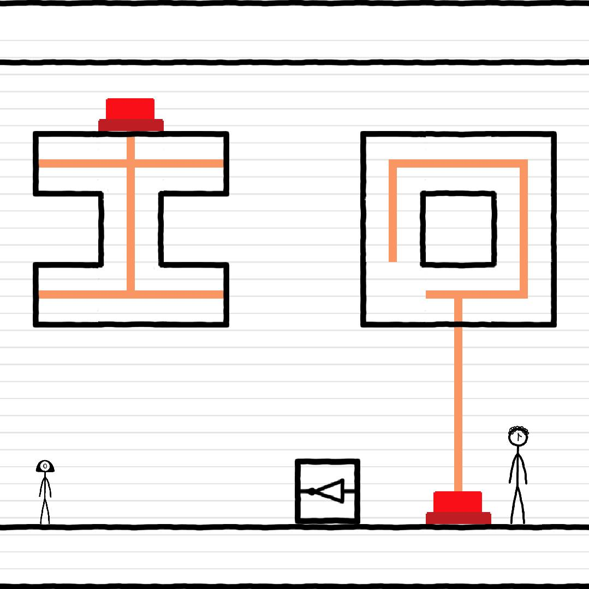
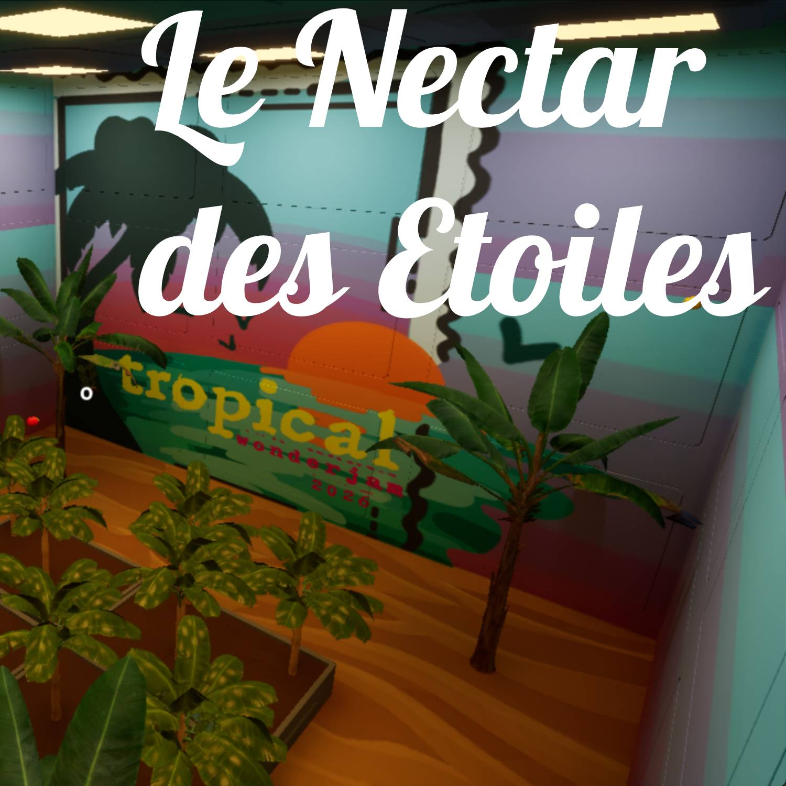
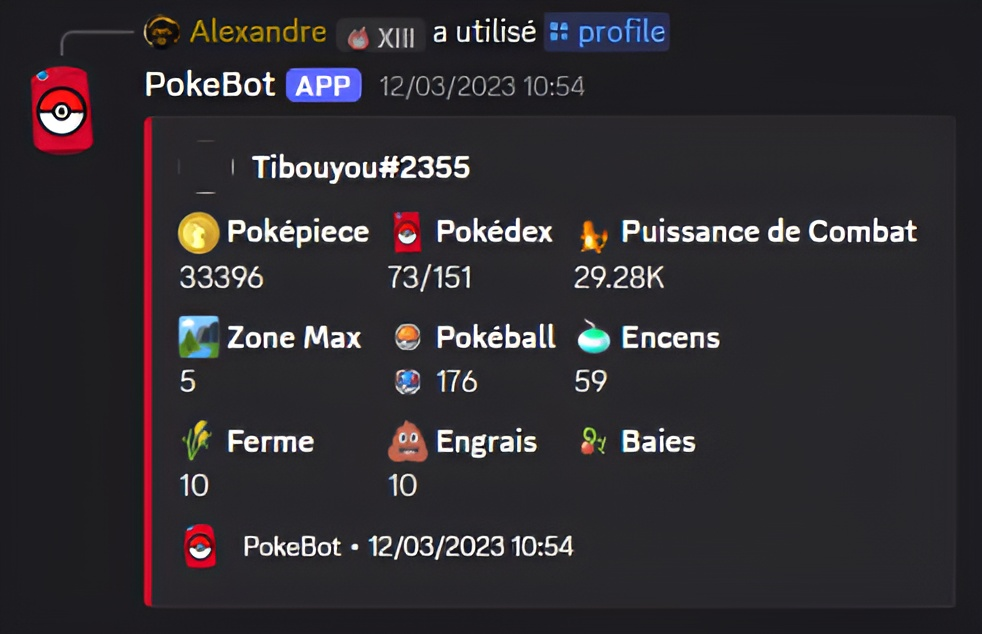

It Takes IO
Réalisation d’un jeu de puzzle-plateformer 2 joueurs en c++ à l’aide de la bibliothèque graphique SFML.
Étudiant en double diplôme international ingénieur informatique + maîtrise en jeux vidéo, je cherche un stage d’une durée de 22 semaines à partir de septembre 2026.

Réalisation d’un jeu de puzzle-plateformer 2 joueurs en c++ à l’aide de la bibliothèque graphique SFML.

Jeu narratif développé en 48h et décrochant la 1ère place lors de la WonderJam d’hiver 2026 de l’UQAC sponsorisé par Ubisoft Saguenay

Développement d'un bot Discord en JavaScript: capture de Pokémon, gestion d'une ferme de baies, économie et progression par zones. Hébergé sur Heroku avec persistance MongoDB via Mongoose.
Compétences mobilisables en stage/alternance, construites dans mon double-diplôme: Ingénieur informatique à Polytech Lyon et Maîtrise en jeux vidéo à l'UQAC.
C, C++, C# et JavaScript pour développer des fonctionnalités fiables, maintenir du code existant et livrer rapidement sur des projets concrets.
Unreal Engine et Godot pour concevoir et développer des jeux vidéo, avec une connaissance des pipelines de production et de l'architecture des moteurs modernes.
Conception orientée objet (encapsulation, héritage, polymorphisme) pour produire un code clair, modulaire et facile à faire évoluer en équipe.
Travail en équipe, organisation des tâches, documentation technique et suivi de production pour contribuer efficacement à un cycle de développement complet.
Analyse de complexité, choix des structures de données et optimisation pour résoudre des problèmes techniques de manière efficace.
Git et Perforce pour gérer les versions, collaborer en équipe et assurer l'intégrité du code dans des projets complexes.
SQL pour modéliser, interroger et exploiter les données de façon cohérente, avec une attention sur la qualité et la performance des requêtes.
HTML, CSS, PHP et JavaScript pour réaliser des interfaces lisibles et des fonctionnalités web maintenables côté front et back.
Retrouvez-moi sur ces plateformes ou consultez mon CV.